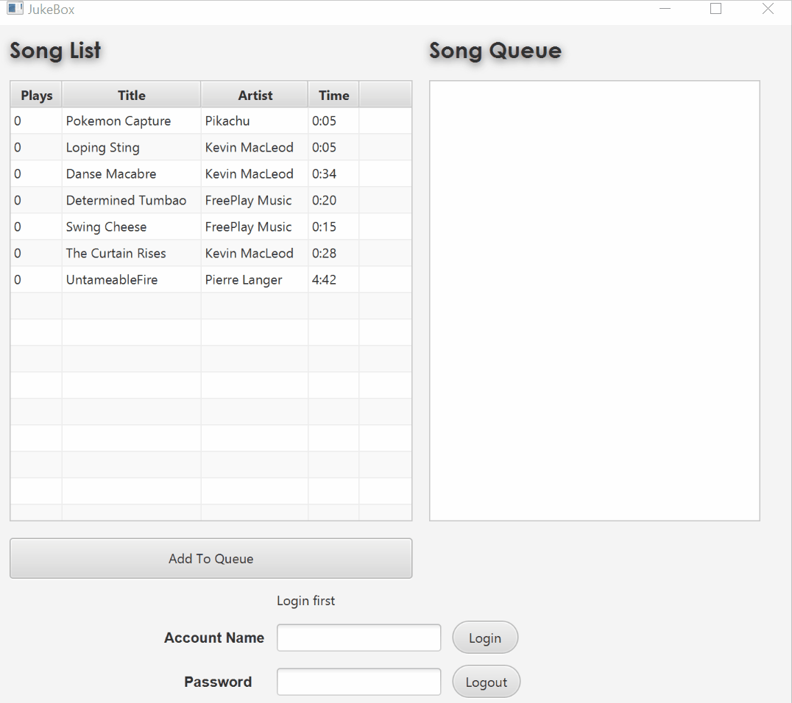
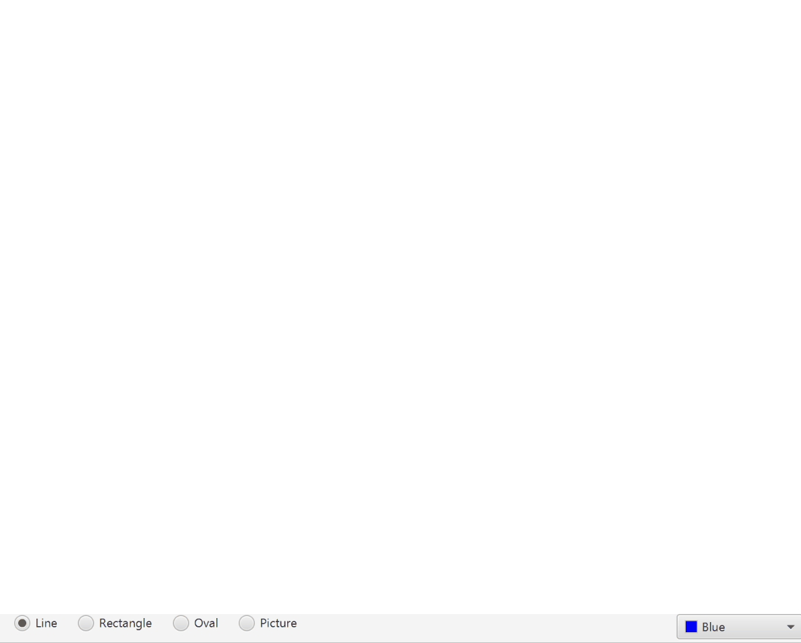
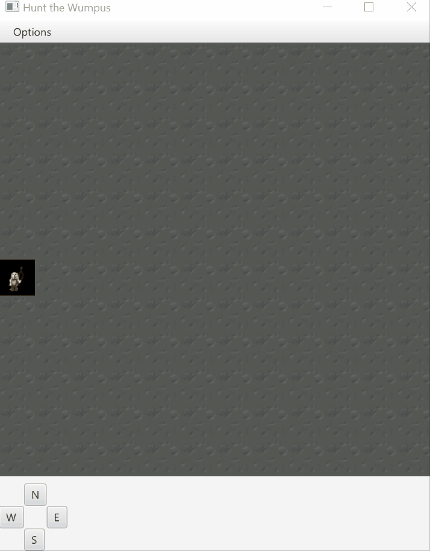
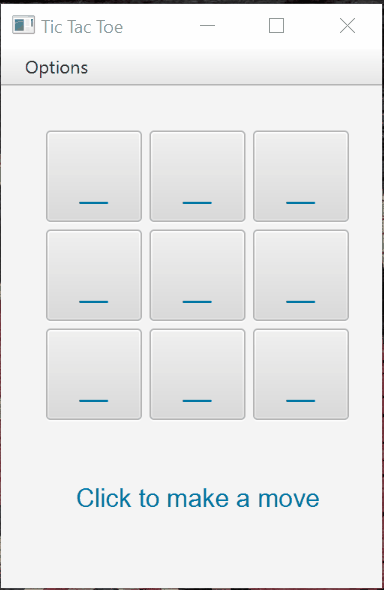
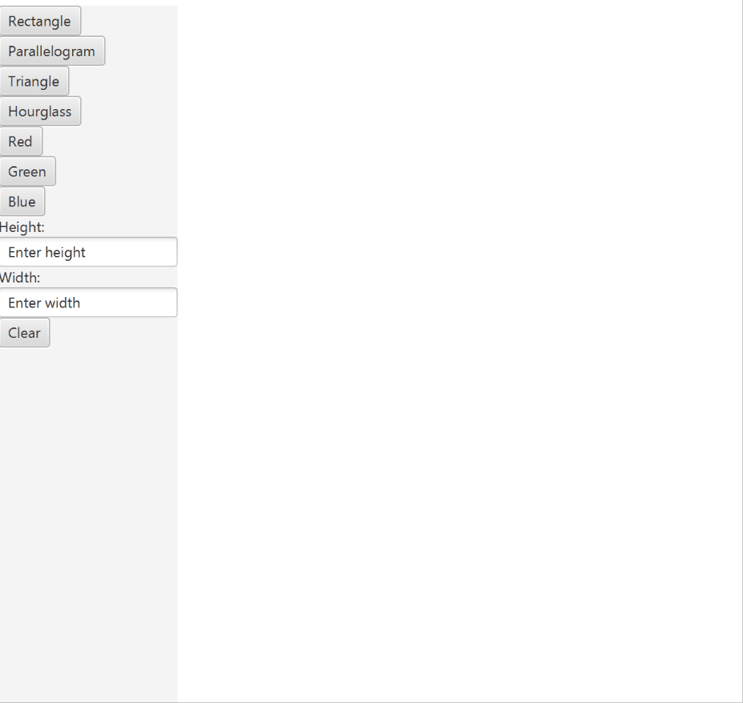

CHRIS
QUEVEDO
chris.quevedo@yahoo.com | My GitHub
Anything's Fine
Anything's Fine is a recommendation and social media app for food. People often do not know what to eat, so they can use this app to get a recipe, restaurant, snack, or food recommendation. They can also view the social media page of the app to see what their friends are eating and make their own recommendations.
 Github
Github
Pokemon
A Pokemon game written in Java using JavaFX for graphics. Player has two maps to travel on and can catch wild pokemon or battle them. Done as final project in group of four in CSC 335.
 Github
Github
Jukebox
A jukebox simulation written in Java using JavaFX for graphics and media playing. User will sign in and be allowed to enqueue 3 songs a day. Done as a two-person project in CSC 335.
 GithubCSC335 Paint
A drawing simulation written in Java using JavaFX for graphics. User can draw different shapes with different colors on the canvas.
 GithubWumpus Game
A simple 2D game written in Java with JavaFX. User has one arrow to shoot the monster and must travel around map to figure out where it is.
 GithubCSC335 TicTacToe
A tictactoe game written in Java with JavaFX. User can play in different views and can adjust the strategy of the computer opponent.
 GithubCSC210 Paint
A drawing application written in Java with JavaFX. User can draw different shapes with different colors by clicking on the canvas.
 Github